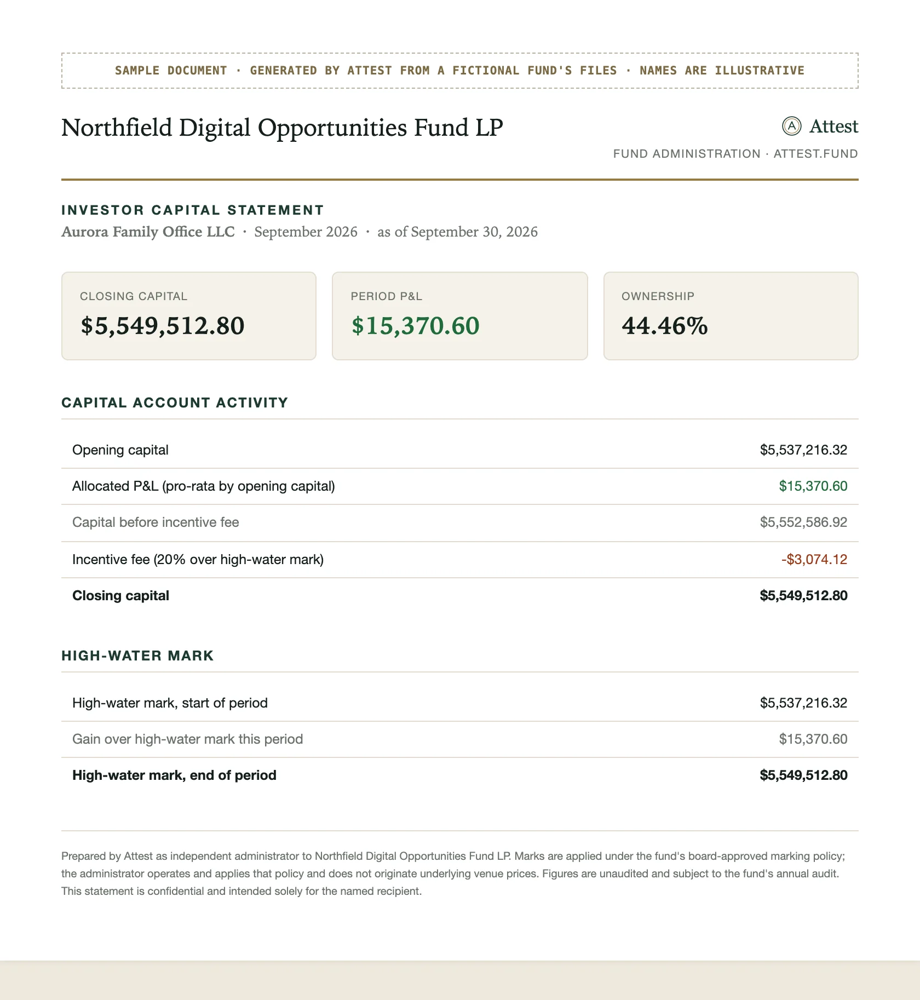
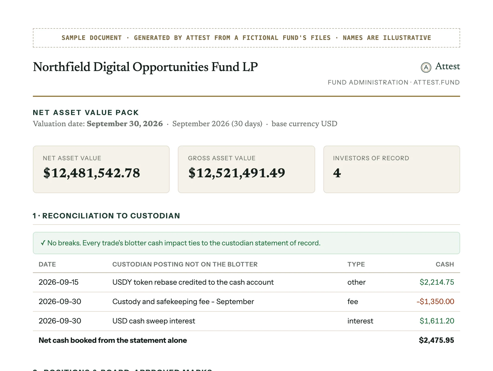
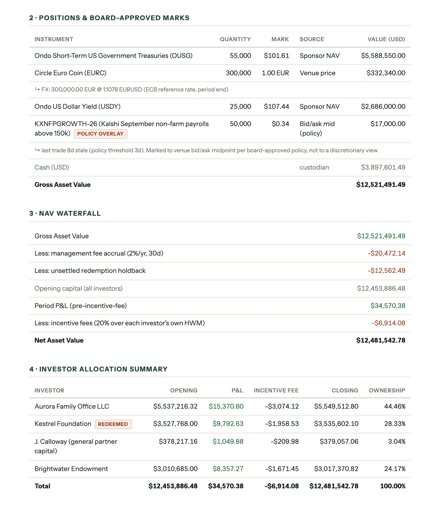
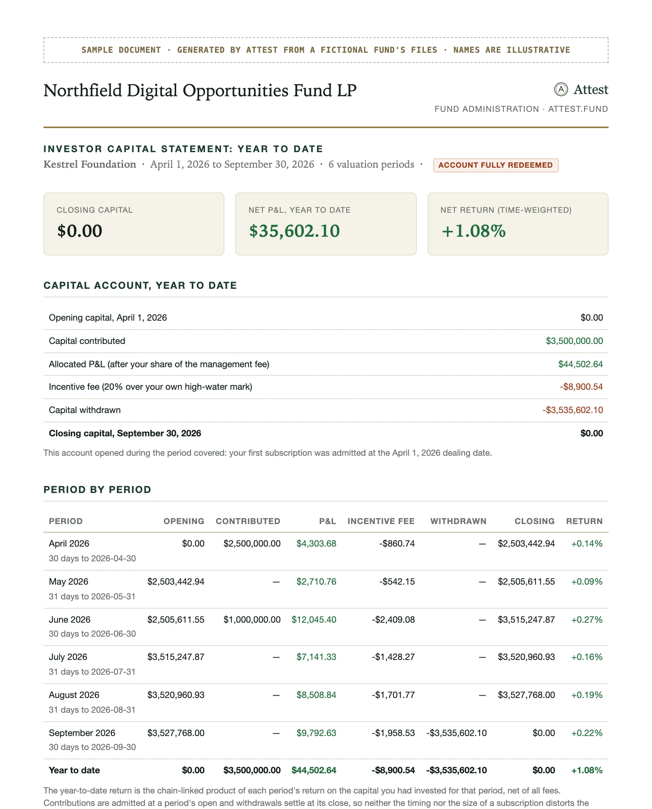
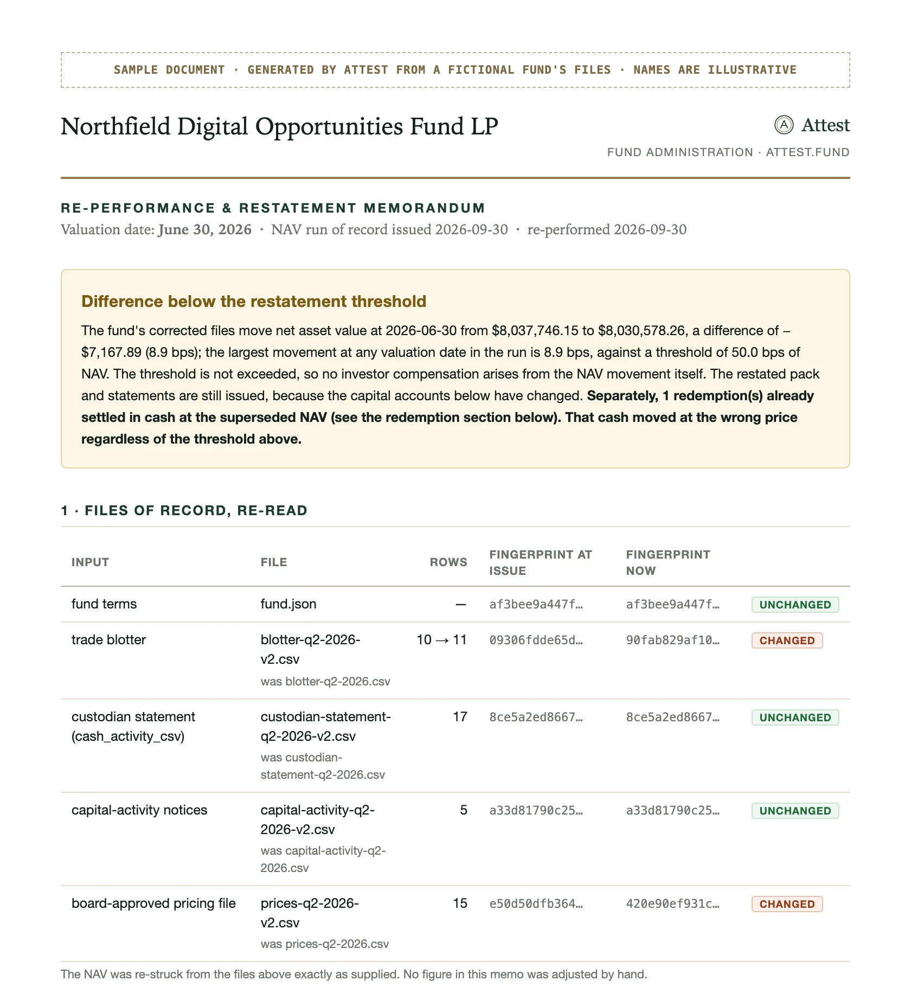

Fund administration that shows its work.
NAV, reconciliation and investor statements for hedge, quant and digital asset funds. Every figure traces back to the file it came from.
The first period runs alongside your current process, at no cost.


What you receive each period
Real output from Attest, generated from a fictional fund's files.

NAV pack
Reconciliation, marks with their source, the NAV waterfall and the allocation across investors.
Download PDF
Investor statements
Each investor's capital, fees against their own high-water mark, and time-weighted return.
Download PDF
Restatement memo
When a number changes: what moved, which file caused it, and cash already paid at the old NAV.
Download PDFBuilt for newer books
Anything with a board-approved price can be carried. These have specific handling.
| Instrument | For example | How it's marked |
|---|---|---|
| Event contracts | Kalshi CPI and payrolls contracts | Last trade on the venue. If it's older than policy allows, the bid and ask midpoint, and the pack flags it. |
| Tokenized Treasury funds | Ondo OUSG, Ondo USDY | The sponsor's published NAV per unit, with the source shown against the position. |
| Stablecoin balances | Circle EURC | Venue price at the ECB reference rate. A stale rate is applied per policy and flagged. |
| Custody activity | Fees, interest, token rebases | Booked from the custodian statement, shown on its own when no trade sits behind it. |
How we handle your fund
Commitments that hold whether or not anyone is checking.
We administer. We don't value.
Your board sets the pricing policy and your general partner owns valuation. We apply the approved marks and record every step.
Every file fingerprinted
Each input is hashed with SHA-256 on arrival, and every document records those hashes. Any NAV can be re-run and checked byte for byte.
Your data, or our error
If a change comes from your files, we say so. If our software fails to reproduce a number, we say that instead, and never pass it to you to research.
Your files stay yours
Used only to administer your fund, under an NDA and data processing agreement signed first, and deleted on request.
New, and upfront about it
Attest doesn't have a SOC 1 report yet. We'd rather you read that here than find it in diligence.
It's why every engagement starts in shadow mode. You compare our work with numbers you already trust, for as many periods as you like, before relying on it.
Questions
What do you need from us?
The files you already produce: a trade blotter, a custodian statement, capital activity notices and your board-approved pricing file. Any format your systems export.
How does shadow mode work?
You send one period's files. We return a NAV pack and a statement for every investor. You compare them with your own numbers, and the exception report explains any difference. The first period is free.
Do you value our positions?
No. Your board approves the pricing policy and your general partner owns valuation. We apply the approved marks, reconcile them and document every step.
Are you SOC 1 audited?
Not yet. A SOC 1 Type II examination is on our roadmap. Until then, shadow mode is how you check our work before relying on it.
Which funds is Attest built for?
Emerging hedge, quant and digital asset funds, typically under $500M, including funds holding event contracts, tokenized Treasury funds and stablecoins.
How is our data protected?
An NDA and a data processing agreement are signed before you send anything. Files are used only to administer your fund, fingerprinted on arrival and deleted on request.
Begin with one period, in parallel.
Send the files for a single valuation date. We'll return a NAV pack and investor statements to judge against your own.